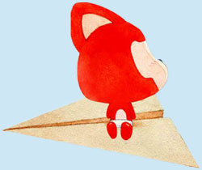
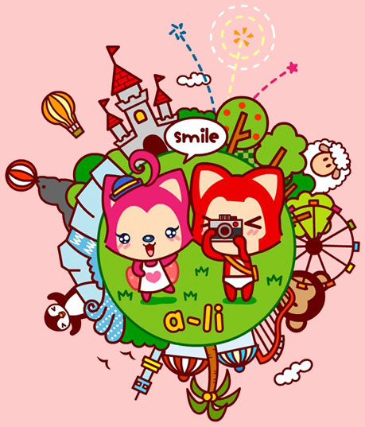

LY ❤❤❤ CFY 洋洋洋来送生日祝福啦！
按键盘 "↓" 先倾听一下他内心的独白吧
过去的LY一直是一个人生活，享受着孤独，更憧憬着爱情。

一个人的长廊

一个人的山岗

一个人的出行

一个人的游戏

但他依然乐观，微笑着，等待着

生活难免有风风雨雨

他总是能去从容应对

并且面带阳光、自信的微笑

生活也不会总是一帆风顺

但他每次都能勇敢的面对
随时准备接受生活的挑战


可是LY的爱情又在哪里呢？
在镜子里面吗？他不敢相信 哈哈哈

他去问大树，我的爱情在哪里？
大树告诉他，也许就在不远的地方

于是，LY一个人继续向前走
走在茫茫的大地上

终于，终于……直到有一天LY与CFY相遇了呀

LY喜欢CFY，非常非常的喜欢呀，因为CFY的出现，LY脸上有了更加灿烂的笑容

他们在一起了呢，可是CFY会喜欢和完全接受LY吗？


毕竟才刚刚开始……

LY想要和CFY一直一直在一起！！！
然后LY会不由自主地地去找CFY

然后两个人一起出去玩

记得深夜打车去福永，第一次亲亲抱抱，好开心好幸福~

直到很晚
LY会依依不舍地回去呀

然后也高兴地进入梦乡，在梦中还会和CFY在一起玩耍呢

LY那可是要成为CFY的逛街助手、提包助手、导航助手的

然后，LY和CFY想要一起去很多地方玩

LY也想和CFY一块成为一对吃货，一起分享美味

再然后，可能他们会搬到一起去吧

再然后，LY可能想学习她的特殊技能呢

想学红烧牛腩?

那时候，每天他们可以吃到自己做的美食

然后会一起出发，高高兴兴的一起上班
LY会感觉自己好幸福。
因为心里住着她
那个有CFY在的地方

他们可能偶尔也会有不愉快吧

LY可不想这样


一定是我有什么做的不对惹她不开心了，LY会这么想
如果没有CFY在身边在身旁，窗外就没有风景

如果没有CFY在身后


LY又怎会变得笃定从容、无畏前行呢？
LY不想这样。他会为CFY改变自己
LY之前不知道CFY喜欢什么，但他一定会想办法去了解、去记录。


就是愿意一直陪伴着你呐
因为，爱情就像花草一样
需要用爱和包容来浇灌

因为，LY不想让自己后悔
LY开始准备一份小礼物


看着惊喜一点点准备好了 LY好开心 因为他想象着CFY看到时 能有开心的笑容

想想未来他们或许 会好长好长 LY好开心 或许他可以和CFY一起 去全世界好多地方玩
LY也会继续努力哒
为了他和CFY的梦之城堡


LY很幸福，因为他遇到了CFY，他相信后面的每天都会是快乐的
简简单单的，体会与CFY在一起的每时每刻/span>
LY想和CFY一起过幸福的生活


永远有多远？
比时间多一秒就是永远，我会永远爱你
世界有多大？
你走到哪里，世界就有多大
今天的日子好特殊呀，第一次为凡瑜小宝过生日呢


凡瑜小宝贝，生日快乐呦，永远爱你么么哒~~
I love you

这么美好的故事一定会一直继续下去哒。
无论精彩、平淡都会是他们喜欢的。
小瑜儿，love you forever ！
-- 按“Esc"键 查看全部